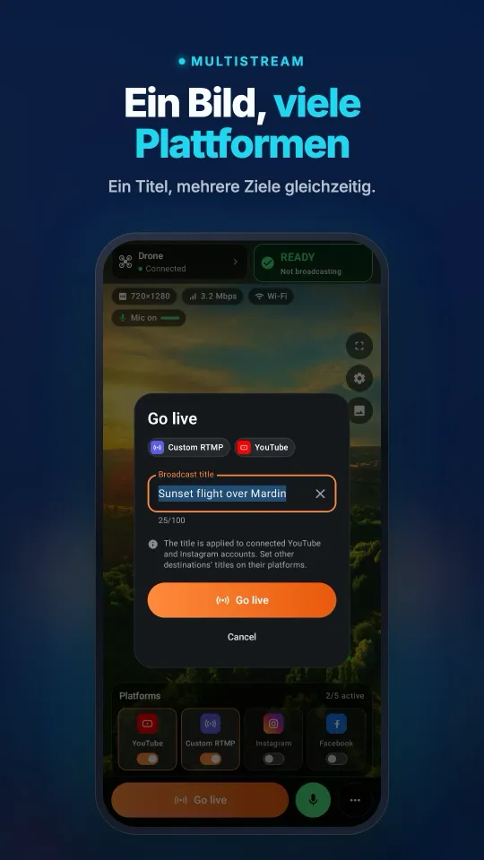
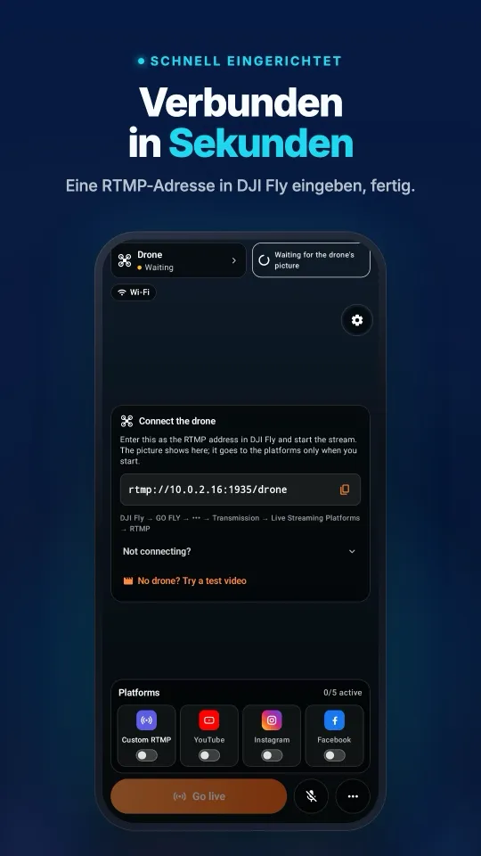
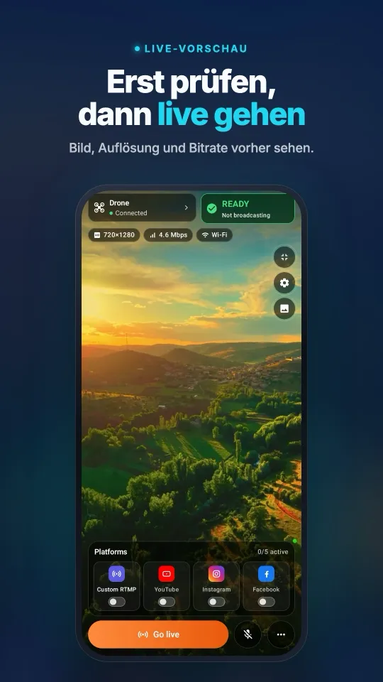
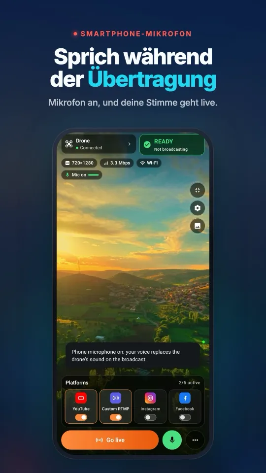
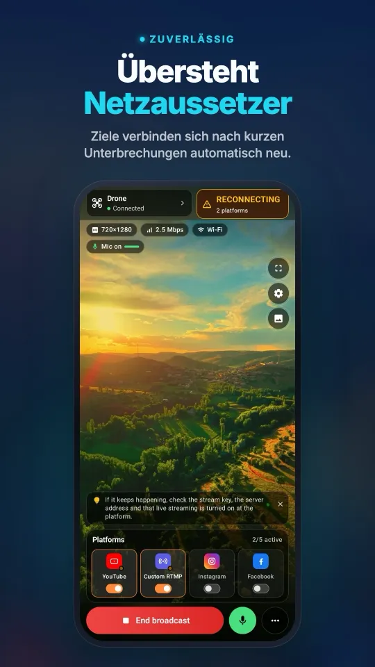

So gehen Sie mit einer DJI-Drohne auf TikTok live
DJI Fly kann nicht selbst auf TikTok streamen, aber RTMP an einen Computer senden. Stream My Drone empfängt diesen Stream und bringt ihn auf zwei Wegen zu TikTok: direkt mit Server-URL und Stream-Schlüssel von TikTok, falls Ihr Konto einen hat, oder über TikTok LIVE Studio, wo die Drohne als Kamera erscheint und kein Stream-Schlüssel nötig ist.
DJI Fly verlangt an Ihrer RC 2 ein Mikrofon und startet den Stream nicht? So geht es ohne Mikrofonkauf →
Kurz gesagt
- Sie brauchen eine DJI-Drohne, deren DJI Fly unter Live Streaming Platforms RTMP anbietet, und einen Mac oder Windows-PC im selben WLAN oder Hotspot wie die Fernsteuerung.
- Mit Stream-Schlüssel: Fügen Sie in Stream My Drone ein TikTok-Ziel hinzu und drücken Sie LIVE STARTEN.
- Ohne Stream-Schlüssel: Wählen Sie in TikTok LIVE Studio „Stream My Drone Camera“ als Kameraquelle und gehen Sie dort live.
- TikTok erwartet Hochformat; die App sendet 1080×1920 mit 30 fps und füllt leere Flächen mit einer unscharfen Kopie des Bildes.
- TikTok entscheidet, wer LIVE gehen darf und wer einen Stream-Schlüssel bekommt; die Voraussetzungen hängen von Konto und Region ab.
Was Sie brauchen
- Eine DJI-Drohne mit Fernsteuerung, bei der DJI Fly unter Live Streaming Platforms die Option RTMP zeigt. Hat Ihre DJI-Fly-Version sie, funktioniert die Drohne – die App spricht nie direkt mit der Drohne.
- Einen Mac (macOS 13 oder neuer, Apple Silicon oder Intel) oder einen PC mit Windows 10/11, auf dem Stream My Drone installiert ist.
- Fernsteuerung und Computer im selben WLAN oder beide im Hotspot Ihres Handys.
- Ein TikTok-Konto, das LIVE gehen darf. Für die direkte Methode braucht es zusätzlich RTMP-Zugang (Server-URL und Stream-Schlüssel); für die Methode mit LIVE Studio Zugang zu TikTok LIVE Studio.
Schritt 1: Drohnenbild an den Computer senden
- Stream My Drone öffnenDer Tab „Live gehen“ zeigt eine Adresse wie
rtmp://192.168.1.20:1935/droneund einen QR-Code. - RTMP-Bildschirm in DJI Fly öffnenGO FLY → ••• → Transmission → Live Streaming Platforms → RTMP.
- Adresse einfügen und startenSobald das Bild ankommt, wird der erste Schritt in der App grün, und die Live-Vorschau erscheint.
Keine Drohne zur Hand? Proben Sie mit Mit einer Videodatei testen in der App den ganzen Weg mit einem aufgezeichneten Clip.
So sieht es auf dem Handy ausVon der Verbindung mit DJI Fly bis zur Übertragung auf mehreren Plattformen, alles auf einem Bildschirm.




Methode A: mit Stream-Schlüssel auf TikTok live gehen
Nutzen Sie diese Methode, wenn TikTok Ihnen Server-URL und Stream-Schlüssel anzeigt. Nicht jedes Konto bekommt sie; wenn Sie sie nicht finden, nehmen Sie Methode B.
- Server-URL und Stream-Schlüssel bei TikTok kopierenÖffnen Sie im TikTok LIVE Center oder in TikTok LIVE Studio den Bildschirm mit dem Stream-Schlüssel und kopieren Sie die Server-URL (sie sieht aus wie
rtmp://push-rtmp-….tiktokcdn.com/game/) und den Stream-Schlüssel. - TikTok-Ziel hinzufügenWählen Sie in Stream My Drone im Bereich Wohin streamen? TikTok und fügen Sie beide Werte ein. Der Schlüssel wird im Anmeldedaten-Tresor Ihres Systems gespeichert, nicht in einer Datei.
- Bild im Hochformat lassenLassen Sie unter Bild und Ton Hochformat 9:16 eingeschaltet. Ganzes Bild füllt leere Flächen mit einer unscharfen Kopie der Aufnahme; Bildschirm füllen schneidet stattdessen zu.
- LIVE STARTEN drückenDie Taste wird frei, sobald der lokale Server läuft, Drohnenvideo ankommt und ein Ziel ausgewählt ist. Die Zielkarte zeigt dann LIVE.
- Stream auf TikTok prüfenPrüfen Sie in TikTok, ob der Stream empfangen wird und öffentlich ist. Wenn Sie fertig sind, drücken Sie in der App Stream beenden.
Methode B: TikTok LIVE Studio ohne Stream-Schlüssel
TikTok LIVE Studio ist TikToks eigene Desktop-App. Sie melden sich mit Ihrem TikTok-Konto an, daher braucht sie keinen RTMP-Zugang – nur eine Kamera. Stream My Drone stellt eine bereit: Stream My Drone Camera.
- Virtuelle Kamera aktivierenDrücken Sie im Tab TikTok LIVE Studio auf Virtuelle Kamera aktivieren. Auf dem Mac muss die App im Ordner „Programme“ liegen, und macOS fragt einmal nach Ihrer Zustimmung unter Systemeinstellungen → Allgemein → Anmeldeobjekte & Erweiterungen → Kameraerweiterungen.
- Kamera startenWenn die Karte Startbereit anzeigt, drücken Sie Virtuelle Kamera starten.
- Kamera in LIVE Studio hinzufügenFügen Sie eine Kameraquelle hinzu und wählen Sie Stream My Drone Camera.
- Ton einrichtenStellen Sie die Audioaufnahme dieser Quelle auf Keine und wählen Sie in LIVE Studio genau ein Mikrofon. Die Kamera liefert nur Video, so hören Sie den Ton nie doppelt.
- Live gehenDrücken Sie in TikTok LIVE Studio auf Go Live. Das Live-Gehen bleibt immer in Ihrer Hand.

Die eingebaute virtuelle Kamera unter Windows wurde mit TikTok LIVE Studio getestet. Wählen Sie „Stream My Drone Camera“ als Videoquelle. Für Übertragungen mit OBS-Szenen steht außerdem die optionale OBS-Integration bereit.
Empfohlene Einstellungen für TikTok
| Einstellung | Wert | Warum |
|---|---|---|
| Ausrichtung | Hochformat 9:16, 1080×1920 | TikTok wird auf Handys hochkant geschaut. |
| Bildrate | 30 fps | Flüssig und sparsam beim Upload. |
| Bitrate | 6 Mbit/s CBR | Eine konstante Rate gefällt dem Ingest-Server. |
| Videocodec | H.264 High, Keyframes alle 2 Sekunden | Das erwarten Live-Ingest-Server. |
| Bildausschnitt | Ganzes Bild | Keine schwarzen Balken und keine verlorenen Ränder. |
Die App nutzt diese Werte automatisch; Sie wählen nur Ausrichtung und Bildausschnitt. Planen Sie mindestens 10 Mbit/s stabilen Upload pro Ziel ein.
Wenn es nicht funktioniert
- Die Vorschau bleibt leer: Fernsteuerung und Computer sind wahrscheinlich in unterschiedlichen Netzen. Bringen Sie beide ins selbe WLAN oder denselben Hotspot und prüfen Sie die Adresse in DJI Fly.
- DJI Fly startet das Streaming auf der RC 2 nicht: Manche DJI-Fly-Versionen verlangen zuerst ein Mikrofon an der Fernsteuerung.
- Die TikTok-Karte zeigt Fehlgeschlagen: Kopieren Sie Server-URL und Schlüssel erneut – ein Schlüssel kann ablaufen oder zurückgesetzt werden.
- Die Kamera fehlt in LIVE Studio: Starten Sie zuerst die virtuelle Kamera und dann LIVE Studio neu, damit es die Kameras erneut auflistet.
- Das Bild hat 720p: Die Fernsteuerung sendet oft 720p. Die App zeigt die echte Eingangsauflösung und tut nicht so, als wäre es natives 1080p.
Fragen
Kann ich ohne Stream-Schlüssel mit einer DJI-Drohne auf TikTok live gehen?
Ja. Nutzen Sie TikTok LIVE Studio und wählen Sie Stream My Drone Camera als Kameraquelle. In LIVE Studio melden Sie sich mit Ihrem eigenen Konto an, daher sind weder Server-URL noch Stream-Schlüssel nötig.
Warum habe ich keinen TikTok-Stream-Schlüssel?
TikTok vergibt RTMP-Stream-Schlüssel nur an manche Konten, und die Regeln unterscheiden sich je nach Region und ändern sich mit der Zeit. Ohne Schlüssel ist TikTok LIVE Studio die Alternative.
Kann ich gleichzeitig auf TikTok und Instagram streamen?
Ja, mit Stream-Schlüsseln für beide. Stream My Drone kodiert das Bild einmal und sendet es an jedes aktivierte Ziel; fällt ein Ziel aus, laufen die anderen weiter.
Meldet sich Stream My Drone bei meinem TikTok-Konto an?
Nein. Die App meldet sich nie bei einer Plattform an und drückt nie für Sie auf Go Live; sie sendet nur Video an die Adresse, die Sie angeben, oder stellt LIVE Studio eine Kamera bereit.
Ist Stream My Drone kostenlos?
Ja. Die App ist kostenlos und quelloffen unter der MIT-Lizenz und steht in keiner Verbindung zu DJI oder TikTok.
Bringen Sie Ihre Drohne vom Handy aus live
Stream My Drone für Android und iPhone empfängt das DJI-Fly-Bild und sendet es an YouTube, Instagram, Facebook, TikTok, Twitch, Kick oder Ihren eigenen Server, an mehrere gleichzeitig. Einmalkauf, kein Abo.
Kostenlose App für Mac und Windows →So funktioniert die App →

Weitere Anleitungen
Wie streamt man live mit einer Drohne? (Schritt für Schritt, 2026)
Mit einer Drohne live auf YouTube, Instagram, TikTok oder Facebook streamen: was Sie brauchen, die 4 Wege, DJI Fly RTMP in 5 Schritten, Internettempo und Lösungen.
DJI RC 2 streamt nicht ohne Mikrofon? So beheben Sie “No built-in mic in current device”
DJI Fly 1.16 startet den RC-2-Livestream nicht ohne Mikrofon. Warum, was hilft (USB-C-Mikrofon, AirPods) und eine Lösung ohne Zusatzhardware mit einem Android-Handy.
So streamen Sie eine DJI Flip live
DJI Flip mit RC 2, RC-N3 oder RC-N2 live streamen: RTMP-Einrichtung auf Handy und Computer, Handflächen- und Handysteuerung, Hochformat und Plattform-Checks.
So streamen Sie eine DJI Lito X1 live
DJI Lito X1 mit RC 2, RC-N3 oder RC-N2 live streamen: RTMP-Einstellungen in DJI Fly, Abläufe mit Handy und Computer, Plattform-Einrichtung und Fehlerbehebung.
So streamen Sie eine DJI Lito 1 live
DJI Lito 1 mit RC 2, RC-N3 oder RC-N2 live streamen: RTMP-Einstellungen in DJI Fly, Abläufe mit Handy und Computer, Plattform-Einrichtung und Fehlerbehebung.
So streamen Sie eine DJI Air 3S live
DJI Air 3S live auf YouTube, Instagram oder Facebook streamen: Fernsteuerung wählen, DJI Fly RTMP mit Handy oder Computer verbinden und das gesendete Bild prüfen.
So streamen Sie eine DJI Air 3 live
DJI Air 3 live auf YouTube, Instagram oder Facebook streamen: Fernsteuerung wählen, DJI Fly RTMP mit Handy oder Computer verbinden und das gesendete Bild prüfen.
So streamen Sie eine DJI Mavic 4 Pro live
DJI Mavic 4 Pro mit RC 2 oder RC Pro 2 live an Handy oder Computer streamen: DJI Fly RTMP, Unterschiede beim Mikrofon, 720p-Grenze und Plattform-Einrichtung.
So streamen Sie eine DJI Mavic 3, Classic oder Pro live
DJI Mavic 3, Classic oder Pro mit RC-N1 oder RC Pro live streamen: warum die DJI RC nicht streamen kann, Empfang auf dem Handy, RTMP am Computer und Qualitätsgrenzen.
So streamen Sie eine DJI Mini 3 Pro live
DJI Mini 3 Pro mit RC-N1, DJI Fly auf dem Handy und Stream My Drone auf dem Computer live streamen – und warum die ursprüngliche DJI RC diesen RTMP-Weg nicht kann.
So streamen Sie eine DJI Mini 3 live
DJI Mini 3 über RC-N1 und DJI Fly an Stream My Drone auf dem Computer live streamen: Grenzen der DJI RC, 720p-Live-Ansicht und Veröffentlichen auf der Plattform.
So streamen Sie live mit der DJI Mini 5 Pro
Livestream mit der DJI Mini 5 Pro über RC 2 oder RC-N3: DJI Fly RTMP einrichten und das Drohnenbild per Handy oder Computer an YouTube, Instagram oder Facebook senden.
So streamen Sie live mit der DJI Mini 4 Pro
Livestream mit der DJI Mini 4 Pro über RC 2 oder RC-N2: Einrichtung mit Handy oder Computer, RTMP-Einstellungen in DJI Fly, Mikrofonpflicht und Prüfung auf der Plattform.
Tiere live mit Ihrer DJI-Drohne erkennen und zählen
Stream My Drone erkennt Ziegen, Schafe, Kühe, Pferde, Esel und Geflügel im Livebild Ihrer Drohne, markiert sie im Stream und zählt sie – alles auf Ihrem eigenen Computer.
DJI Fly RTMP Livestream: die komplette Einrichtung
So richten Sie RTMP-Livestreaming in DJI Fly ein: wo die Einstellung ist, welche Adresse Sie eintragen, wie Fernsteuerung und Computer ins Netz kommen und was bei Fehlern hilft.
Warum DJI Fly nicht auf Instagram live streamen kann (und die Lösung)
DJI Fly hat keine Instagram-Option, und sein RTMP-Client beherrscht das verschlüsselte RTMPS nicht, das Instagram verlangt. Warum das so ist und wie Sie trotzdem live gehen.
Machen Sie Ihre DJI-Drohne zur Webcam Ihres Computers
Machen Sie Ihre DJI-Drohne mit der virtuellen Kamera von Stream My Drone zur Webcam für TikTok LIVE Studio, OBS, Zoom, Google Meet oder Teams. Einrichtung, Ideen und Lösungen.
So streamen Sie live mit der DJI Neo
So streamen Sie live mit der DJI Neo: welcher Steuerungsmodus funktioniert (Handy, RC-N3, Brille), RTMP in DJI Fly und live auf Instagram, TikTok oder YouTube mit Stream My Drone.
So streamen Sie live mit der DJI Avata 2
So streamen Sie FPV-Aufnahmen der DJI Avata 2 live: das Bild der Goggles 3 an DJI Fly auf dem Handy teilen, per RTMP senden und auf Instagram, TikTok oder YouTube live gehen.
Streamen Sie Ihre DJI-Osmo-Kamera live auf Instagram, TikTok und mehr
DJI Mimo kann Osmo Action, Osmo Pocket und Osmo 360 per RTMP streamen. Senden Sie das an Stream My Drone und gehen Sie gleichzeitig auf Instagram, TikTok und YouTube live.
So streamen Sie die Osmo Pocket 3 live auf Instagram und TikTok
So streamen Sie die DJI Osmo Pocket 3 per RTMP aus DJI Mimo gleichzeitig auf Instagram, TikTok und YouTube und nutzen sie mit Stream My Drone als kabellose Webcam.
So streamen Sie eine Osmo Action live auf Instagram und TikTok
Streamen Sie eine DJI Osmo Action 6, 5 Pro, 4 oder 3 per RTMP aus DJI Mimo mit Stream My Drone gleichzeitig auf Instagram, TikTok, YouTube und Twitch. Einrichtung und Einstellungen.
So gehen Sie mit einer DJI-Drohne auf Instagram live
Mit einer DJI-Drohne auf Instagram live gehen: Stream-URL und Schlüssel auf instagram.com holen, den RTMP-Stream von DJI Fly über Stream My Drone senden und Live gehen drücken.
So streamen Sie eine DJI-Drohne live auf YouTube
Ihre DJI-Drohne live auf YouTube streamen: Livestreaming aktivieren, Stream-Schlüssel aus YouTube Studio kopieren, RTMP von DJI Fly über Stream My Drone senden. Einstellungen und Tipps.
So gehen Sie mit einer DJI-Drohne auf Facebook live
Ihre DJI-Drohne live auf Facebook streamen: RTMPS-Server-URL und Stream-Schlüssel aus Live Producer holen, den Stream von DJI Fly über Stream My Drone senden und live gehen.
So streamen Sie eine DJI-Drohne auf Twitch
Ihre DJI-Drohne live auf Twitch streamen: Stream-Schlüssel aus dem Creator-Dashboard kopieren, Twitch in Stream My Drone als eigenes RTMP-Ziel hinzufügen und live gehen.
So streamen Sie eine DJI-Drohne auf Kick
Ihre DJI-Drohne live auf Kick streamen: Stream-URL und Schlüssel aus dem Kick-Dashboard kopieren, in Stream My Drone als eigenes RTMP-Ziel hinzufügen und live gehen.
Eine DJI-Drohne gleichzeitig auf mehreren Plattformen streamen
Senden Sie einen Livestream Ihrer DJI-Drohne gleichzeitig an TikTok, Instagram, YouTube, Facebook, Twitch und Kick – mit Stream My Drone, kostenlos, lokal, ohne Restream-Dienst.
Stream My Drone vs. Restream: Was passt zu Ihrer Drohne?
Eine DJI-Drohne auf mehreren Plattformen streamen: Cloud-Relay von Restream oder Stream My Drone auf dem eigenen Computer? Kosten, Wasserzeichen, Instagram, Hochformat im Vergleich.
Eine DJI-Drohne streamen, ohne NGINX und OBS einzurichten
Der übliche Weg von DJI Fly in OBS führt über einen NGINX-RTMP-Server, eine Konfigurationsdatei und eine Medienquelle. Was das bedeutet – und wie eine einzige App es erspart.